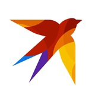
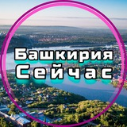
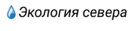

12.09.2025 19:38 Моя Планета (moya-planeta.ru) Регион: Москва
Первая в истории: россиянка прошла Большую уральскую тропу нон-стоп за 120 дней
Путешественница преодолела путь от границы с Казахстаном до перевала Дятлова. 11 сентября завершилось уникальное одиночное путешествие российской путешественницы Оксаны Лыткиной по Большой уральской тропе. За 120 дней она преодолела более 2300 км – ...
12.09.2025 10:04 ФедералПресс (fedpress.ru) Регион: Москва
Россиянка в одиночку прошла 2300 километров к легендарному перевалу Дятлова
Россиянка в одиночку прошла 2300 километров к легендарному перевалу Дятлова ЕКАТЕРИНБУРГ, 12 сентября, ФедералПресс. Россиянка Оксана Лыткина завершила грандиозный одиночный переход по Большой уральской тропе, преодолев 2300 километров от оренбургских степей до севера Уральских гор ...

12.09.2025 22:14 Комсомольская правда: KP.RU (t.me/truekpru) Регион: Москва
🤯 Жительница Миасса за 120 дней прошла пешком 2300 километров и добралась до перевала Дятлова
Путешествие Оксаны Лыткиной началось в мае с горы Полковник в Оренбургской области. А завершилось вчера, 11 сентября она поднялась на перевал Дятлова, где вскоре за ней прилетел вертолет и отвез в Нягань ...
15.09.2025 10:33 Яндекс Путешествия (travel.yandex.ru) Регион: Москва
Туристка из Миасса прошла Большую уральскую тропу за 120 дней
Путешественница Оксаны Лыткина 11 сентября завершила свою экспедицию по Большой уральской тропе, которая началась 15 мая, сообщает пресс-служба проекта. Она стала первой в России девушкой, которой удалось преодолеть в одиночку более 2300 километров ...
13.09.2025 10:32 Вокруг света (vokrugsveta.ru) Регион: Москва
«Урал на каблуках»: Российская путешественница прошла почти 2400 км по Большой уральской тропе за 120 дней
11 сентября российская путешественница и многодетная мать Оксана Лыткина завершила масштабное соло-путешествие по Большой уральской тропе. За 120 дней она прошла более 2394 км – от Орска на границе с Казахстаном до печально ...
12.09.2025 10:23 Трэвелхакер (t.me/trvlhacker) Регион: Российская Федерация
Россиянка прошла 2 394 километра по Уралу за 120 дней
Российская путешественница Оксана Лыткина завершила нон-стоп прохождение Большой уральской тропы. За 120 дней она прошла более 2 394 километра от города Орск на границе с Казахстаном до Перевала Дятлова на Северном Урале по ...
12.09.2025 12:39 Интерфакс. Туризм (interfax-russia.ru/tourism) Регион: Москва
Туристка прошла почти 2.4 тыс. км по Большой Уральской тропе за 120 дней
Екатеринбург. 12 сентября. ИНТЕРФАКС - Путешественница и режиссер из города Миасс Челябинской области Оксана Лыткина завершила многодневную экспедицию по Большой уральской тропе (БУТ), сообщает пресс-служба проекта ...
12.09.2025 14:08 Дзен. Новости (dzen.ru/news) Регион: Москва
Путешественница из Миасса в одиночку прошла 2300 км по Большой Уральской тропе
Путешествующая по России женщина преодолела тысячи километров горного маршрута за 120 дней. Lenta.ru Оксана за время своего похода собрала уникальную информацию для дальнейшего развития и улучшения Большой уральской тропы ...
12.09.2025 10:04 Rambler.ru. Путешествия Регион: Москва
Россиянка в одиночку прошла 2300 километров к легендарному перевалу Дятлова
"Я дошла, дошла. Долго сидела, плакала, потому что сама не верила. До сих пор, когда начинаю говорить, у меня ком в горле. Не верю, что все это закончилось ...
12.09.2025 18:01 Lenta.ru Регион: Москва
Путешествующая в одиночку женщина за 120 дней преодолела тысячи километров в России
Путешествующая по России женщина преодолела тысячи километров горного маршрута за 120 дней. Об этом "Ленте.ру" сообщила пресс-служба Большой уральской тропы (БУТ). По данным источника, многодетная мать Оксана Лыткина 15 мая в одиночку отправилась ...
12.09.2025 16:34 Life24.pro Регион: Москва
Большая Уральская тропа: российская туристка прошла 2 394 километра по Уралу за 120 дней
Российская путешественница Оксана Лыткина триумфально завершила нон-стоп прохождение Большой уральской тропы (БУТ), преодолев сложнейший маршрут длиной более 2394 километров. Ее путь пролегал от города Орск на границе с Казахстаном до Перевала Дятлова на ...
12.09.2025 14:56 Тонкости туризма (tonkosti.ru) Регион: Москва
Россиянка прошла 2394 км по Уралу за 120 дней
11 сентября российская путешественница и многодетная мать Оксана Лыткина завершила маршрут по Большой уральской тропе. За 120 дней она прошла более 2394 км от Орска на границе с Казахстаном до перевала Дятлова на ...
12.09.2025 14:17 Турбизнес (tourbus.ru) Регион: Москва
Российская путешественница Оксана Лыткина прошла 2394 километра по Уралу за 120 дней
Своим одиночным путешествием Оксана стремилась привлечь внимание к потенциалу туризма на Урале Российская путешественница Оксана Лыткина завершила нон-стоп прохождение Большой уральской тропы (БУТ). За 120 дней Оксана прошла более 2 394 километра от ...
12.09.2025 18:55 Статистика и новости туризма (ekec.ru) Регион: Москва
Большая Уральская тропа: российская туристка прошла 2 394 километра по Уралу за 120 дней
Российская путешественница Оксана Лыткина триумфально завершила нон-стоп прохождение Большой уральской тропы (БУТ), преодолев сложнейший маршрут длиной более 2394 километров. Ее путь пролегал от города Орск на границе с Казахстаном до Перевала Дятлова на ...
12.09.2025 18:30 NewsFactory.su Регион: Москва
Путешествующая в одиночку женщина за 120 дней преодолела тысячи километров в России
Путешествующая по России женщина преодолела тысячи километров горного маршрута за 120 дней. Об этом "Ленте.ру" сообщила пресс-служба Большой уральской тропы (БУТ). По данным источника, многодетная мать Оксана Лыткина 15 мая в одиночку отправилась ...
12.09.2025 18:27 Турпром (tourprom.ru) Регион: Москва
Большая Уральская тропа: российская туристка прошла 2 394 километра по Уралу за 120 дней
Российская путешественница Оксана Лыткина триумфально завершила нон-стоп прохождение Большой уральской тропы (БУТ), преодолев сложнейший маршрут длиной более 2394 километров. Ее путь пролегал от города Орск на границе с Казахстаном до Перевала Дятлова на ...
12.09.2025 18:23 Novostisporta.ru Регион: Москва
Путешествующая в одиночку женщина за 120 дней преодолела тысячи километров в России
Оксана Лыткина, многодетная мать, отправилась из Орска до Перевала Дятлова в одиночном походе 15 мая и вернулась 11 сентября, пройдя 2,3 тысячи километров. Она поделилась своим опытом, вдохновляя женщин и путешественников, и привлекла ...
12.09.2025 18:23 Ридус (ridus.ru) Регион: Москва
Российская мать четверых детей преодолела 2,3 тыс. км за 120 дней
Путешественница из России преодолела тысячи километров по горной местности за 120 дней, как сообщила пресс-служба Большой уральской тропы (БУТ) изданию "Лента.ру". По сведениям источника, Оксана Лыткина, будучи многодетной матерью, отправилась в одиночное путешествие 15 мая ...
12.09.2025 07:22 Пикабу.ру (pikabu.ru) Регион: Москва
Отдохнула от семейной жизни...
Многодетная мама с Урала вышла из тайги, где бродила несколько месяцев. Оксана Лыткина завершила свое путешествие. Она прошла более 2300 километров за 120 дней от Орска на границе с Казахстаном до перевала Дятлова ...
12.09.2025 19:06 Worldinform.ru Регион: Москва
Большая Уральская тропа: российская туристка прошла 2 394 километра по Уралу за 120 дней
Российская путешественница Оксана Лыткина триумфально завершила нон-стоп прохождение Большой уральской тропы (БУТ), преодолев сложнейший маршрут длиной более 2394 километров. Ее путь пролегал от города Орск на границе с Казахстаном до Перевала Дятлова на ...
12.09.2025 19:02 Газета.Ru (gazeta.ru) Регион: Москва
Многодетная россиянка в одиночку преодолела 2300 км по горам Урала за 120 дней
Многодетная россиянка в одиночку за 120 дней прошла 2300 км по горам Урала Большая уральская тропа/VK Многодетная россиянка Оксана Лыткина стала первой в истории женщиной, которая в одиночку преодолела более 2300 км по Большой уральской тропе ...
13.09.2025 08:20 Южноуральская панорама (up74.ru) Регион: Челябинск (город, Челябинская Область)
Путешественница покорила Большую уральскую тропу за 120 дней
Оксана Лыткина совершила одиночное путешествие от Орска до перевала Дятлова. Накануне завершила свое одиночное прохождение Большой уральской тропы российская путешественница Оксана Лыткина. Маршрут протяженностью 2300 километров, который начался от города Орска на границе ...
13.09.2025 02:18 Moneytimes.ru Регион: Москва
От Орска до Перевала Дятлова: россиянка переписала историю Большой уральской тропы
Многодетная мать прошла 2,3 тысячи километров по Уралу за 120 дней пройти пешком 2,3 тысячи километров за четыре месяца реально даже для многодетной мамы? История россиянки Оксаны Лыткиной доказывает, что невозможное вполне достижимо ...
12.09.2025 23:00 Лента дня (t.me/lentadnya) Регион: Москва
🌎 Многодетная мать преодолела тысячи километров за 120 дней
Россиянка Оксана Лыткина решила в одиночку пройти 2,3 тысячи километров. Её путешествие началось 15 мая в Орске, а завершилось 11 сентября на Перевале Дятлова. За четыре месяца женщина покорила 20 гор высотой от ...
13.09.2025 11:26 СТРАНОВЕД (t.me/stranoved) Регион: Российская Федерация
🌄 2300 км в одиночку: Оксана Лыткина завершила исторический поход по Большой Уральской тропе
Впервые в России девушка одна прошла 2300 км за 120 дней по самому длинному горному маршруту страны – Большой Уральской тропе. 📍 Старт – Орск, финиш – перевал Дятлова ...
13.09.2025 08:34 Smi2.ru Регион: Москва
Из Оренбуржья к перевалу Дятлова: россиянка преодолела 2 394 километра по Уралу
Путешественница и многодетная мама Оксана Лыткина завершила нон-стоп прохождение Большой уральской тропы, преодолев за 120 дней более 2 394 километров - от Орска на границе с Казахстаном до перевала Дятлова на Северном Урале ...
13.09.2025 14:04 РЕН ТВ (ren.tv) Регион: Москва
Жительница Миасса за 120 дней прошла 2300 км из Орска до перевала Дятлова
Многодетная мать из Миаса прошла в одиночку всю уральскую тропу за четыре месяца. Оксана Лыткина преодолела пешком более двух тысяч километров от Орска на границе с Казахстаном до перевала Дятлова, это самый протяженный маршрут России ...
13.09.2025 13:58 Esse.24newnews.ru Регион: Москва
Жительница Миасса за 120 дней прошла 2300 км из Орска до перевала Дятлова
vk.com/ Оксана Соло Многодетная мать из Миасса прошла в одиночку всю уральскую тропу за четыре месяца. Оксана Лыткина преодолела пешком более двух тысяч километров от Орска на границе с Казахстаном до перевала Дятлова, ...
13.09.2025 16:35 Mail.ru. ВФокусе Регион: Москва
Российская путешественница прошла почти 2400 км по Уралу за 120 дней
Оксана Лыткина начале свое рекордное соло-путешествие 15 мая. Источник: Вокруг Света 11 сентября российская путешественница и многодетная мать Оксана Лыткина завершила масштабное соло-путешествие по Большой уральской тропе ...
13.09.2025 15:33 Вести.Ru (vesti.ru) Регион: Москва
Жительница Миасса в одиночку прошла 2300 км из Орска до перевала Дятлова
Жительница Миасса Оксана Лыткина преодолела в одиночку Большую уральскую тропу от Орска на границе с Казахстаном до перевала Дятлова. Всего многодетная мать прошла 2300 километров. Поход начался 15 мая, до последней точки Латкина добралась 11 сентября ...
14.09.2025 09:13 Вести туризм (travelvesti.ru) Регион: Москва
Россиянка прошла 2 394 километра по Уралу за 120 дней
Оксана финишировала в удаленном от цивилизации месте в четверг, 11 сентября. 14 сентября 2025 года. Перевал Дятлова. Вести Туризм. Российская путешественница Оксана Лыткина завершила нон-стоп прохождение Большой уральской тропы, о котором мы ранее рассказывали ...
13.09.2025 21:17 Республика Башкортостан (resbash.ru) Регион: Уфа (город, Республика Башкортостан)
Путешествие на каблуках по Уралу завершилось
Россиянка Оксана Лыткина прошла 2 394 километра по Уралу за 120 дней. Российская путешественница Оксана Лыткина завершила нон-стоп прохождение Большой уральской тропы. За 120 дней Оксана прошла более 2 394 километров от города ...
13.09.2025 20:09 JustMedia.Ru Регион: Екатеринбург (город, Свердловская Область)
Уралочка в одиночку прошла уральский хребет
Переход до перевала Дятлова занял 119 дней. Уральская девушка в одиночку прошла весь уральский хребет, – восхищается землячкой телеграм-канал "Бажовский сказ" . Путь пролегал от Оренбурга до перевала Дятлова ...
13.09.2025 17:24 Ямал + | YAMAL1.RU (t.me/yamal_1) Регион: Ноябрьск (город, Ямало-ненецкий Автономный Округ)
Многодетная мама прошла пешком 2300 километров до перевала Дятлова
Оксана Лыткина завершила своё нон-стоп путешествие по уральской тайге. Проект назывался "Урал на каблуках" и проходил по всей Большой Уральской тропе. "Я дошла, дошла. Долго сидела, плакала, потому что сама не верила ...
15.09.2025 10:24 Лента новостей Екатеринбурга (ural-news.net) Регион: Екатеринбург (город, Свердловская Область)
Финиш!. Оксана Лыткина завершила свое сложное путешествие - она пешком прошла от Оренбурга до перевала Дятлова
Финиш! Оксана Лыткина завершила свое сложное путешествие - она пешком прошла от Оренбурга до перевала Дятлова. Стартовала она еще в мае 2025 года и за 119 дней прошла более 2300 километров по уральским горам ...
15.09.2025 09:50 Вести-Урал (t.me/vestiuraltv) Регион: Екатеринбург (город, Свердловская Область)
❗❗❗❗❗❗Финиш!
Оксана Лыткина завершила свое сложное путешествие - она пешком прошла от Оренбурга до перевала Дятлова. Стартовала она ещё в мае 2025 года и за 119 дней прошла более 2300 километров по уральским горам ...
15.09.2025 09:39 ИА Европейско-Азиатские новости (eanews.ru) Регион: Екатеринбург (город, Свердловская Область)
Челябинка в одиночку преодолела Большую Уральскую тропу
Жительница Челябинской области Оксана Соло (Лыткина) покорила Большую уральскую тропу . Об этом пишет сайт Pchela.news . Расстояние в 2,3 тыс. км от Орска на границе с Казахстаном до перевала Дятлова на Северном ...
15.09.2025 09:20 Смотрим (smotrim.ru) Регион: Москва
Вести. Южный Урал Путешественница из Миасса в одиночку прошла 2300 км по Большой уральской тропе
Вести. Южный Урал Путешественница из Миасса в одиночку прошла 2300 км по Большой уральской тропе Путешественница из Миасса Оксана Лыткина наконец-то сняла туфли. Ее большое одиночное путешествие под названием "Урал на каблуках" завершено ...
15.09.2025 08:42 ИА Саратовские Областные Новости (saroblnews.ru) Регион: Саратов (город, Саратовская Область)
Челябинская путешественница первой в России в одиночку покорила Большую Уральскую тропу
На самом финише ее ожидал вертолет. Челябинская путешественница Оксана Лыткина вошла в историю, став первой женщиной в России, которая в одиночку смогла покорить весь маршрут Большой Уральской тропы ...
14.09.2025 17:00 В Курсе (v-kurse.ru) Регион: Пермь (город, Пермский Край)
Российская путешественница прошла в одиночку Большую уральскую тропу
Ее путь пролегал и через Пермский край. Российская путешественница Оксана Лыткина за 120 дней преодолела в одиночку две тысячи 300 километров и прошла Большую уральскую тропу ...
14.09.2025 12:20 Заря Урала (smizu.ru) Регион: Краснотурьинск (город, Свердловская Область)
Путешественница Оксана Лыткина в одиночку за 120 дней совершила нон-стоп прохождение Большой уральской тропы
Путешественница Оксана Лыткина в одиночку за 120 дней совершила нон-стоп прохождение Большой уральской тропы Российская путешественница Оксана Лыткина 11 сентября завершила свое нон-стоп прохождение Большой уральской тропы ...
Комсомольская Правда https://www.chel.kp.ru/daily/277822/5313098/
10.10.2025 09:49 БезФормата. Екатеринбург (ekaterinburg.bezformata.com) Регион: Екатеринбург (город, Свердловская Область)
Путешественница Оксана Лыткина рассказывает о Большой Уральской Тропе
11 сентября уральская путешественница Оксана Лыткина завершила поход по Большой уральской тропе, став первой в России, кто непрерывно и в одиночку преодолел самый протяженный горный маршрут ...
10.10.2025 00:00 Областная газета Регион: Екатеринбург (город, Свердловская Область)
«Хотела рассказать всей стране, что на Урале есть классная тропа»
Путешественница Оксана Лыткина - о Большой уральской тропе 11 сентября уральская путешественница Оксана ЛЫТКИНА завершила поход по Большой уральской тропе, став первой в России, кто непрерывно и в одиночку преодолел самый протяженный горный маршрут ...
03.10.2025 11:58 Челябинск. Главное (t.me/odinobl) Регион: Челябинск (город, Челябинская Область)
🏔 Губернатор Алексей Текслер назвал уникальным путешествие Оксаны Соло "Урал на каблуках"
Оксана Лыткина (Соло) как путешественник проекта "Урал на каблуках" прошла 2300 км по Уральским горам. "Тропа выстроена так, что идет от локации к локации. Там разные условия, есть буреломы, но они проходимы, я ...
01.10.2025 14:18 Комсомольская правда - Челябинск (chel.kp.ru) Регион: Челябинск (город, Челябинская Область)
Путешественница из Миасса напишет книгу после похода по Большой Уральской тропе
Оксана Лыткина из Челябинской области расскажет, как преодолела 2300 километров за 120 дней Фото: Оксана Соло / vk.com Журналист из Миасса Челябинской области Оксана Лыткина стала первой женщиной, прошедшей всю Большую Уральскую тропу ...
01.10.2025 11:14 Pchela.news Регион: Челябинск (город, Челябинская Область)
После похода по Большой Уральской тропе Оксана Лыткина напишет книгу
Она шла 120 дней, встретила на пути кабанов, волков и даже медведя, ночевала в палатках и глэмпингах, запускала петарды от страха, а финишировала – эффектно, на голубом вертолете ...
01.10.2025 00:00 Час пик. Уфа Регион: Уфа (город, Республика Башкортостан)
Туристка из Миасса прошла по Башкортостану более 500 километров
Жительница Миасса Челябинской области, журналистка, соло-путешественница и мать троих детей Оксана Лыткина в одиночку преодолела 2300 километров по Большой уральской тропе. Она приняла участие в трэвел-проекте "Урал на каблуках" ...
27.09.2025 16:27 E1.RU | Новости Екатеринбурга (t.me/e1_news) Регион: Екатеринбург (город, Свердловская Область)
Путешественница Оксана Лыткина, мама троих детей, в одиночку за три месяца прошла весь Урал
2300 километров, с юга на север – от горы Полковник в Оренбургской области через Башкирию и Челябинскую область до перевала Дятлова. Весь маршрут Большой уральской тропы ...
27.09.2025 13:15 43.ru Регион: Киров (город, Кировская Область)
«Вы что, нашли любовь в тайге?». Многодетная мать три месяца скиталась по горам — вот что ее ждало дома
Оксана рассказала о путешествии и объяснила, почему не рекомендует другим его повторять Путешественница Оксана Лыткина за три месяца прошла весь Урал . С юга на север – стартовала от горы Полковник в Оренбургской ...
25.09.2025 06:38 E1.ru Регион: Екатеринбург (город, Свердловская Область)
«Давай признаемся: Урал не для каблуков». Многодетная мать три месяца скиталась по горам и тайге — вот что ее ждало дома
Оксана рассказала о путешествии и объяснила, почему не рекомендует другим его повторять Путешественница Оксана Лыткина за три месяца прошла весь Урал . С юга на север – стартовала от горы Полковник в Оренбургской ...
25.09.2025 00:00 Южноуральская панорама Регион: Челябинск (город, Челябинская Область)
По тропе за 120 дней
Путешественница покорила Большую уральскую тропу за 120 дней. Оксана Лыткина совершила одиночное путешествие от Орска до перевала Дятлова.
24.09.2025 10:39 Вести Южный Урал | Челябинск (t.me/cheltvru) Регион: Челябинск (город, Челябинская Область)
🏕 От Южного Урала до Северного: о путешествии длиной 2300 км
Оксана Лыткина, которая провела в одиночном походе 12 недель, напишет две книги. Путешественница из Миасса намерена рассказать о своем пути в рамках проекта "Урал на каблуках" и создать некий дневник для туристов ...
24.09.2025 08:15 Комсомольская правда - Оренбург (orenburg.kp.ru) Регион: Оренбург (город, Оренбуржье)
В мокрой одежде сквозь леса и болота. Челябинская туристка Оксана Лыткина прошла 2300 километров от Орска до перевала Дятлова
Туристка Оксана Лыткина прошла 2300 километров от Орска до перевала Дятлова В пути Оксана была 4 месяца Фото: с личной страницы в соцсети.. Пешими походами Оксана Лыткина увлеклась еще в 2018-м году ...
23.09.2025 21:23 Горы России (инфо.горыроссии.рф) Регион: Москва
“Урал на каблуках”: экспедиция, изменившая взгляд на Большую Уральскую тропу.
Оксана Лыткина, режиссер и многодетная мать из Челябинской области, совершила одиночный переход по Уралу. Ее экспедиция стала первым непрерывным прохождением всего маршрута Большой уральской тропы. Это масштабный проект, за которым следили в реальном времени ...
15.09.2025 16:05 Sport.russia24.pro Регион: Москва
Российская путешественница в одиночку прошла почти 2400 километров за 120 дней
Россиянка Оксана Лыткина недавно завершила свое продолжительное соло-путешествие. Девушка прошла 2394 километров по Большой уральской тропе за 120 дней . Источник: Telegram-канал funnymountains Спортсменка начала свой путь 15 мая в городе Орск на границе с Казахстаном ...
15.09.2025 16:05 Russia24.pro Регион: Москва
Российская путешественница в одиночку прошла почти 2400 километров за 120 дней
Россиянка Оксана Лыткина недавно завершила свое продолжительное соло-путешествие. Девушка прошла 2394 километров по Большой уральской тропе за 120 дней . Спортсменка начала свой путь 15 мая в городе Орск на границе с Казахстаном ...
15.09.2025 14:45 Russian Traveler (rtraveler.ru) Регион: Москва
Россиянка в одиночку прошла 2 394 км по горам и «поставила» Урал на каблуки
Путешественница Оксана Лыткина завершила одиночное прохождение Большой уральской тропы – женщина шла без остановки 120 дней! Россиянка в одиночку прошла более 2 394 километра от города Орск на границе с Казахстаном до Перевала ...
21.09.2025 16:32 ORSK.RU 18+ (t.me/ruorsk) Регион: Орск (город, Оренбуржье)
Российская путешественница за 120 дней дошла от Орска до перевала Дятлова
Российская путешественница из Миасса Оксана Лыткина завершила одиночное прохождение Большой уральской тропы (БУТ). За 120 дней она преодолела 2300 километров. Стартовала девушка от горы Полковник в Орске, а закончила поход на перевале Дятлова ...
19.09.2025 13:29 Радио Форум (forumradio.ru) Регион: Екатеринбург (город, Свердловская Область)
Интервью. Большая уральская тропа
2300 км Большой уральской тропы позади! И соло-путешественница Оксана Лыткина снова в студии Радио "Форум". Каким был сольный поход по Большой уральской тропе? Кто встретился Оксане за 4 месяца пути, и почему после ...
19.09.2025 06:33 Радио Комсомольская правда (radiokp.ru). Екатеринбург Регион: Екатеринбург (город, Свердловская Область)
Туристка из Миасса завершила одиночный поход по Уралу на каблуках
Александр Цариков и Павел Филиппов из Екатеринбурга вместе со Станиславом Гладковым и Сергеем Гдалем из Челябинска обсуждают новости Южного и Среднего Урала во время радиомоста https://t ...

18.09.2025 21:14 Башкирия Сейчас (t.me/bashkiria_seichas) Регион: Уфа (город, Республика Башкортостан)
⛰ Оксана Лыткина стала первой россиянкой, прошедшей всю Большую уральскую тропу длиной 2300 км от Орска до перевала Дятлова
За 120 дней путешествия она посетила десятки природоохранных зон и собрала данные для улучшения туристической инфраструктуры региона. По её словам, эта акция призвана привлечь внимание к возможностям развития туризма на Урале и вдохновить ...
18.09.2025 16:30 Свердловское областное телевидение (obltv.ru) Регион: Екатеринбург (город, Свердловская Область)
«Урал на каблуках»: женщина прошла 2300 километров в одиночку
О том, как прошло невероятное путешествие в рамках проекта "Урал на каблуках" и о себе, как о первой девушке в истории России, которая в одиночку прошла более 2300 километров за 120 дней по ...
18.09.2025 15:10 Аргументы и Факты - Челябинск (chel.aif.ru) Регион: Челябинск (город, Челябинская Область)
Через горы и реки. Многодетная мама в одиночку прошла более 2 300 км
Оксана не планирует останавливаться на достигнутых результатах. Из личного архива Многодетная мама и любительница активного отдыха Оксана Лыткина в очередной раз отправилась в путешествие по Большой уральской тропе ...
18.09.2025 09:33 БезФормата. Екатеринбург (ekaterinburg.bezformata.com) Регион: Екатеринбург (город, Свердловская Область)
Она дошла до финиша: 120 дней по Большой уральской тропе!
Путешественница Оксана Лыткина в одиночку совершила нон-стоп прохождение по маршруту БУТ – Я дошла, дошла! Долго сидела, плакала, потому что сама не верила. До сих пор, когда начинаю говорить, у меня ком в горле ...
18.09.2025 08:45 Esse.24newnews.ru Регион: Москва
Через донос в опеку к рекорду: многодетная челябинка завершила 120-дневный поход на каблуках
Ее приключения на Большой Уральской тропе лягут в основу сериала. Челябинская путешественница Оксана Соло (Лыткина) достигла исторического результата, став первой в России женщиной, которая в одиночку прошла всю Большую Уральскую тропу ...
18.09.2025 08:45 Царьград (tsargrad.tv) Регион: Москва
Через донос в опеку к рекорду: многодетная челябинка завершила 120-дневный поход на каблуках
Ее приключения на Большой Уральской тропе лягут в основу сериала. Челябинская путешественница Оксана Соло (Лыткина) достигла исторического результата, став первой в России женщиной, которая в одиночку прошла всю Большую Уральскую тропу ...
18.09.2025 08:45 Russia24.pro Регион: Москва
Через донос в опеку к рекорду: многодетная челябинка завершила 120-дневный поход на каблуках
Ее приключения на Большой Уральской тропе лягут в основу сериала. Челябинская путешественница Оксана Соло (Лыткина) достигла исторического результата, став первой в России женщиной, которая в одиночку прошла всю Большую Уральскую тропу ...
18.09.2025 08:45 Ria.city Регион: Москва
Через донос в опеку к рекорду: многодетная челябинка завершила 120-дневный поход на каблуках
Ее приключения на Большой Уральской тропе лягут в основу сериала. Челябинская путешественница Оксана Соло (Лыткина) достигла исторического результата, став первой в России женщиной, которая в одиночку прошла всю Большую Уральскую тропу ...
17.09.2025 15:00 Первый областной канал (1obl.ru) Регион: Челябинск (город, Челябинская Область)
Жительница Миасса, прошедшая пешком более двух тысяч километров, вернулась из путешествия
Это больше, чем расстояние от Москвы до Берлина пешком. Более двух тысяч километров троп, перевалов и лесов. Оксана шаг за шагом открывала Урал – и себя саму ...
17.09.2025 05:00 Комсомольская правда - Хабаровск (hab.kp.ru) Регион: Хабаровск (город, Хабаровский Край)
Встречи с кабанами, донос в опеку, эвакуация с перевала Дятлова: туристка из Миасса завершила 2300-километровый одиночный поход по Уралу
Поход туристки Оксаны Соло по Большой уральской тропе ляжет в основу сериала Оксана Соло на перевале Дятлова с букетами цветов, подаренными ей в честь финиша. Фото: vk ...
17.09.2025 00:00 МК в Башкортостане Регион: Уфа (город, Республика Башкортостан)
ПЕШКОМ НА КАБЛУКАХ
Туристка из Миасса прошла по республике более 500 километров Жительница Миасса Челябинской области, журналистка, соло-путешественница и мать троих детей Оксана Лыткина в одиночку преодолела 2300 километров по Большой уральской тропе ...
17.09.2025 00:00 Уральский рабочий Регион: Екатеринбург (город, Свердловская Область)
В одиночку по тропе
Путешественница Оксана Лыткина, которая в августе стала героиней нашей публикации – "УР" встречался с ней в Висимском заповеднике – завершила свое нон-стоп прохождение Большой уральской тропы ...
16.09.2025 20:16 Афиша Daily (t.me/afishadaily) Регион: Москва
Путешественница из Челябинской области Оксана Лыткина завершила масштабное путешествие по Большой уральской тропе
За 120 дней многодетная мать в одиночку прошла 2394 километра – от Орска до перевала Дятлова. Я дошла, дошла. Долго сидела, плакала, потому что сама не верила ...
16.09.2025 13:58 Лента новостей Самары (samara-news.net) Регион: Самара (город, Самарская Область)
Россиянка в одиночку покорила Большую уральскую тропу и вошла в историю
Оксана Лыткина преодолела около 2,4 тыс. км за 120 дней. Фото: Юлия Гусева Россиянка начала путешествие в Орске на границе с Казахстаном и завершила на перевале Дятлова на севере Урала ...
16.09.2025 12:26 7ooo.ru Регион: Москва
Почти 2400 км за 120 дней прошла девушка пешком
zOrg Оксана Лыткина завершила масштабное путешествие по Большой уральской тропе – многодетная россиянка прошла 2394 км, от Орска до перевала Дятлова. На пути ей пришлось преодолеть 38 бродов, взобраться на 20 гор ...
16.09.2025 12:20 РБК Life (t.me/rbc_life) Регион: Москва
Почти 2400 км за 120 дней прошла девушка пешком
Оксана Лыткина завершила масштабное путешествие по Большой уральской тропе – многодетная россиянка прошла 2394 км, от Орска до перевала Дятлова. На пути ей пришлось преодолеть 38 бродов, взобраться на 20 гор высотой более 1000 м ...
16.09.2025 11:11 Правила жизни (pravilamag.ru) Регион: Москва
Россиянка прошла более двух тысяч километров по Большой уральской тропе за 120 дней
Путешествие она преодолела в одиночку. Путешественница, многодетная мать и режиссер из города Миасс Челябинской области Оксана Лыткина стала первой женщиной, которая преодолела 2,3 тыс. км по Большой уральской тропе в одиночку за 120 дней ...
16.09.2025 06:50 Мел (mel.fm) Регион: Москва
Многодетная мама Оксана Лыткина стала первой женщиной в России, преодолевшей Большую уральскую тропу
Жительница Миасса и многодетная мама Оксана Лыткина, давшая интервью "Мелу" прямо во время путешествия под названием "Урал на каблуках", завершила свой маршрут протяженностью 2 300 км ...

15.09.2025 21:40 Экология Севера (ecosever.ru) Регион: Москва
120 дней по горам и лесам: как мать нескольких детей покорила Большую уральскую тропу
В мае жительница России, мать нескольких детей, решилась на испытание, которое многим показалось бы невозможным. Она отправилась в одиночный поход по Большой уральской тропе и за 120 дней преодолела более 2300 километров по ...
15.09.2025 20:30 АБН24 (abnews.ru) Регион: Санкт-Петербург
Россиянка в одиночку прошагала 2400 километров за 120 дней
Российская путешественница Оксана Лыткина прошла 2394 километра по Большой уральской тропе за 120 дней, стартовав 15 мая в Орске и закончив маршрут 11 сентября на Северном Урале ...
15.09.2025 19:01 Четвертый канал (channel4.ru) Регион: Екатеринбург (город, Свердловская Область)
Россиянка прошла 2 394 км по Уралу за 120 дней
В конце маршрута она не сдерживала эмоций. Оксана Лыткина преодолела за 120 дней весь маршрут Большой уральской тропы, который составляет почти 2400 километров. "Мне хотелось понять, возможен ли человеческий ресурс на это, женский ресурс на это ...
15.09.2025 18:27 ГТРК Урал (vesti-ural.ru) Регион: Екатеринбург (город, Свердловская Область)
От Орска до перевала Дятлова: Оксана Лыткина завершила свое путешествие
За плечами – большой рюкзак с самыми необходимыми вещами и две тысячи триста километров, пройденных пешком. Жительница Миасса Оксана Лыткина в одиночку преодолела Большую Уральскую тропу ...
15.09.2025 17:40 Свердловское областное телевидение (obltv.ru) Регион: Екатеринбург (город, Свердловская Область)
Многодетная мама-путешественница за 120 дней добралась до перевала Дятлова
Оксана Лыткина стала первой женщиной в России, которая самостоятельно прошла весь маршрут Большой уральской тропы. В конце маршрута она не сдерживала эмоций. Оксана Лыткина преодолела за 120 дней весь маршрут Большой уральской тропы, ...
15.09.2025 16:41 Mail.ru. Дети Регион: Москва
Многодетная россиянка в одиночку преодолела 2300 км по горам Урала за 120 дней
Многодетная россиянка Оксана Лыткина стала первой в истории женщиной, которая в одиночку преодолела более 2300 км по Большой уральской тропе. Источник: Unsplash Об этом сообщили в пресс-службе туристической тропы ...
15.09.2025 16:33 Отдых в России (rustur.ru) Регион: Москва
Путешественница преодолела 2394 км по Большой Уральской тропе за 120 дней
Жительница Миасса Оксана Лыткина завершила уникальную экспедицию по Большой Уральской тропе, преодолев 2394 километра за 120 дней. Как сообщает пресс-служба проекта, ее маршрут пролегал от Орска на границе с Казахстаном до Перевала Дятлова на Северном Урале ...
15.09.2025 16:05 Нож (knife.media) Регион: Москва
Российская путешественница в одиночку прошла почти 2400 километров за 120 дней
Россиянка Оксана Лыткина недавно завершила свое продолжительное соло-путешествие. Девушка прошла 2394 километров по Большой уральской тропе за 120 дней . Источник: Telegram-канал funnymountains Спортсменка начала свой путь 15 мая в городе Орск на границе с Казахстаном ...